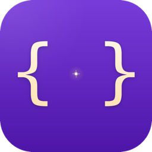
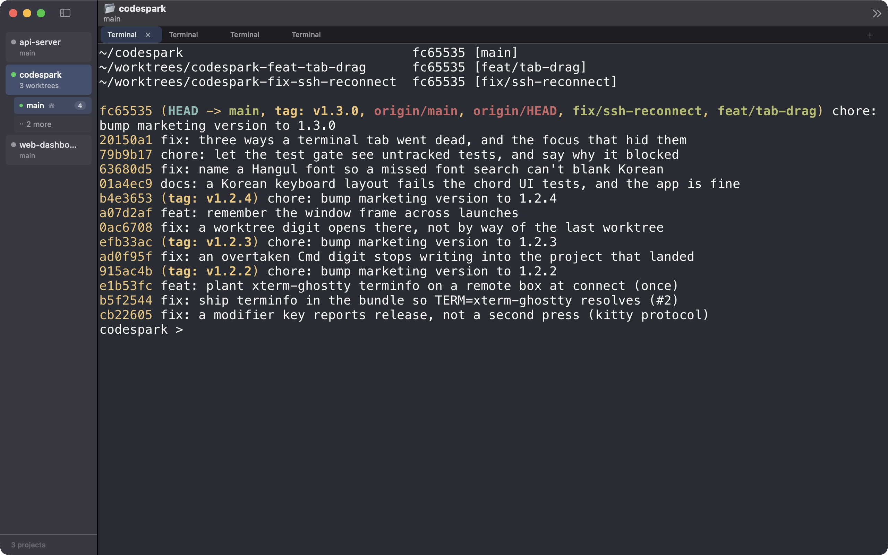

CodeSparkA native macOS terminal multiplexer powered by the Ghostty engine. Organize tabs by project and git worktree, local or over SSH — and find them where you left them. Ghostty 엔진으로 만든 macOS 네이티브 터미널 멀티플렉서. 탭을 프로젝트와 git 워크트리별로 정리하고, 로컬이든 SSH든 — 껐다 켜도 일하던 자리로 돌아옵니다.
macOS 14 Sonoma or later · signed & notarizedmacOS 14 Sonoma 이상 · 서명·공증됨

GPU-accelerated rendering, correct Unicode and kitty keyboard protocol, via the same engine as Ghostty.app. Ghostty.app과 같은 엔진. GPU 렌더링, 한글을 포함한 유니코드, kitty 키보드 프로토콜까지 그대로.
Tabs belong to a worktree. The sidebar is the tree; the tab bar shows only what lives there. ⌘1–⌘9 jump straight to where the work is. 탭은 워크트리 소속입니다. 사이드바가 계층, 탭바는 그 안의 탭만. ⌘1–⌘9로 일하는 자리에 한 번에.
Quit, crash, or reboot: each tab reopens in the directory it was last in, with its previous screen restored as real scrollback. 종료해도, 죽어도, 재부팅해도 각 탭이 마지막 디렉터리로 다시 열리고, 이전 화면이 진짜 스크롤백으로 돌아옵니다.
Browse remote folders, scan remote worktrees, and keep track of cd on the other side — no setup on the server.
원격 폴더를 훑어 고르고, 원격 워크트리를 읽고, 저쪽에서 cd한 자리까지 기억합니다. 서버에 따로 설치할 것 없이.
Describe the task; Claude Code names the branch, creates the worktree, and opens a tab that starts working on it. 할 일을 적으면 Claude Code가 브랜치 이름을 짓고 워크트리를 만들고, 그 일을 시작하는 탭을 열어줍니다.
Each tab shows whether it's running, idle at a prompt, or waiting for your answer — without hooks or plugins. 탭마다 실행 중인지, 프롬프트에서 쉬는지, 내 대답을 기다리는지 보여줍니다. 훅이나 플러그인 없이.
| ⌘T / ⌘W | New tab / close tab새 탭 / 탭 닫기 |
| ⌘⇧[ ⌘⇧] | Previous / next tab이전 / 다음 탭 |
| ⌘⌥[ ⌘⌥] | Previous / next worktree이전 / 다음 워크트리 |
| ⌘1 … ⌘9 | Jump to a project or worktree with tabs탭이 있는 프로젝트·워크트리로 이동 |
| ⌘N | New project새 프로젝트 |
| ⌘⌃S | Toggle sidebar사이드바 보이기/숨기기 |
.dmg from Releases.Releases에서 최신 .dmg를 받습니다.Prefer to build it yourself? See Build in the README (Xcode and Zig required).직접 빌드하려면 README의 Build를 참고하세요 (Xcode, Zig 필요).